La V2.1.0 de spinpy añadió dos correcciones al ensayo de compresión: el plato rígido en el techo (F1) y la medida de la rigidez y de la tensión en el núcleo del VOI (F2). Se validaron frente a un espinodoide sintético rodeado de su propio hueso. Este informe repite la validación con hueso real y usa la aplicación como lo haría un usuario sobre cinco VOIs de micro-CT.
Al hacerlo aparecieron dos defectos de la V2.1.0, que se corrigen en la V2.1.1, y un límite práctico de resolución y memoria que conviene conocer antes de publicar resultados.
En los cinco VOIs, la rigidez que publicaba la app estaba entre un 11 y un 35 % por debajo de la del mismo hueso sin bordes artificiales. Con el plato rígido el error baja al −3 a −10 %, y con plato y núcleo, donde el núcleo cabe, al +0,4 a −4,7 %. La tensión citada pasa de sobrestimarse un 17 a 54 % a quedar entre −5 y +9 %.
| Código | Hallazgo | Afecta a | Medido | Estado |
|---|---|---|---|---|
| R1 | Las correcciones funcionan en hueso real | E aparente, p99 | E: −25 % → −6 % (plato) y −2 % (plato y núcleo) | Confirmado |
| R2 | Sin E corregido cuando el núcleo no cabe (VOI < 2,25 mm) | E corregido | VOIs porcinos de 2 mm sin valor | Corregido V2.1.1 |
| R3 | El motor de la app marcaba el ensayo como fallido | GUI y CLI | ok = False con un fallo falso | Corregido V2.1.1 |
| R4 | Resolución por omisión por debajo de 4 elementos por trabécula | E y tensiones | Tb.Th/h de 1,3 a 2,8 a 40³ | Recomendación |
| R5 | Malla suave a 48³ fuera del alcance de 15 GB | Malla suave | 7,8 a 10 GB previstos; un intento agotó la memoria | Límite |
| R6 | El p99 de referencia depende de la carga en los VOIs equinos proximales | p99 | +22 y +28 % al cambiar la carga del bloque | Reserva |
| R7 | La carga de fallo de Pistoia sube con el plato | σfallo | +7 a +24 %, sin referencia para validarlo | Sin validar |
| R8 | La malla suave no se generó en dos VOIs | Malla suave | astilla invertida (corregido) y superficie no reparable (pendiente) | 1 de 2 corregido |
| P | Uso práctico de la aplicación con los VOIs completos | E y p99 publicados | E corregido −12 a +67 %; malla suave frente a ladrillos de −13 a −46 % → −3 a −27 % | Funciona |
Usar el E corregido y el p99 corregido que la app calcula desde la V2.1.0, con la V2.1.1 o posterior, que arregla los dos defectos encontrados aquí. Trabajar a una resolución con al menos 4 vóxeles por espesor trabecular (Tb.Th/h ≥ 4), que la app ya mide, aunque haya que subir de los 40³ por omisión. Y tratar con reserva la carga de fallo de Pistoia con plato, que cambia de forma apreciable y no ha podido validarse.
Un VOI recortado de una imagen de micro-CT tiene dos bordes que el hueso no tiene: un techo donde se aplica la carga sobre trabéculas cortadas y cuatro caras laterales que dejan trabéculas sin apoyo. La V2.1.0 los corrige, pero se validó en un espinodoide sintético, cuya arquitectura es más regular que la del hueso. Para juzgar las correcciones en hueso real hace falta un valor sin esos bordes: la rigidez y la tensión que tendría la misma región si estuviera rodeada de hueso. Es la configuración embebida, que atenúa la influencia de las condiciones de contorno sobre la región que se mide1.
En el espinodoide, la referencia se obtuvo hacia fuera: el mismo campo de ondas se evaluó en una rejilla mayor y produjo 1,25 mm de hueso adicional alrededor del VOI. En una imagen de micro-CT eso no es posible, porque fuera del VOI no hay datos. La construcción se invierte y se hace hacia dentro, en tres pasos (Figura 1):
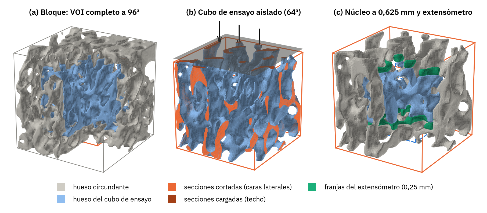
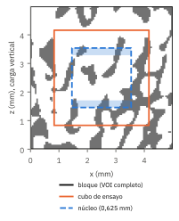
El cubo de ensayo y la región de referencia contienen exactamente los mismos vóxeles (ecuación 9). La única diferencia es que en la referencia el hueso continúa más allá de los bordes. Cualquier diferencia de rigidez o de tensión entre ambos se debe, por tanto, a los bordes artificiales, que es lo que las correcciones pretenden eliminar.
El margen embebido es de 16 vóxeles: 0,50 mm en los VOIs porcinos (3 mm de lado) y 0,83 mm en los equinos (5 mm), menos que los 1,25 mm del espinodoide. Para comprobar que basta, el bloque se ensayó con plato y con tracción (ecuación 10). La rigidez de la región cambió entre un 0,2 y un 2,4 %, de modo que la referencia de E es estable; la del p99 lo es menos (ficha R6).
Todas las magnitudes se calculan con el código de la aplicación (spinpy/fem.py), con material elástico lineal isótropo (Es = 20 GPa, ν = 0,3) y carga en z.
Se aplica sobre el hueso del techo una presión uniforme equivalente a la tensión aparente σapp sobre la sección bruta Ab, con la base deslizante. La rigidez se calcula con el desplazamiento medio del techo, ponderado por el área de sus caras:
H: altura del VOI; Af, ūz,f: área y desplazamiento vertical medio de cada cara cargada del techo; F: fuerza de reacción.
Todos los nodos del techo bajan lo mismo, sin fricción, y la rigidez sale de la fuerza que hace el plato:
Al ser lineal, los campos se escalan a la tensión del protocolo multiplicándolos por σappAb/Fplato, de modo que el p99 y la carga de Pistoia se expresan con la misma carga que en (1).
El núcleo Ωn es la caja interior a m = 0,625 mm de las seis caras, ajustada a la rejilla de vóxeles:
hi, ni: tamaño de vóxel y número de vóxeles por eje; oi: origen de la malla (0 con hexaedros, −hi/2 con tetraedros).
La tensión media del núcleo es la del volumen de la caja, poros incluidos. Cada elemento cuenta con la fracción φe de su volumen que cae dentro: 0 o 1 con hexaedros alineados, y el volumen exacto del tetraedro recortado por la caja con tetraedros:
La deformación se mide con un extensómetro virtual: dos franjas de espesor s = 0,25 mm, arriba y abajo del núcleo, cuyo desplazamiento medio se toma en el centroide de cada elemento, ponderado por volumen:
Con tetraedros cuadráticos, el desplazamiento en el centroide es \(u_z(\mathbf x_e)=-\tfrac18\sum_{\text{esquinas}}u_z+\tfrac14\sum_{\text{aristas}}u_z\). El núcleo existe si el lado del VOI cumple \(L\ge 2m+4s=2{,}25\) mm.
El p99 es el percentil 99 de von Mises en la capa superficial, ponderado por volumen. Con los valores ordenados vi, sus pesos wi y su suma acumulada Si, cada elemento se sitúa en el centro de su tramo y se interpola:
En el núcleo, el p99 se expresa a la tensión del protocolo aplicada al núcleo (\(p_{99}^{\,n}\)), la normalización con la que se validó.
La carga de fallo sigue el criterio de Pistoia2: el factor k que lleva el percentil 98 en volumen de la deformación efectiva a la deformación crítica:
εcrit = 0,7 %; 𝕊: flexibilidad isótropa del tejido.
El remuestreo de la aplicación (elastic.remuestrear_bw) toma el vóxel más próximo, de modo que la máscara sigue siendo binaria y no se crea hueso que no estuviera en la imagen:
n0, h0: vóxeles por lado y tamaño de vóxel de la imagen (188 y 16,0 µm en los porcinos; 97 y 51,5 µm en los equinos), lo que da h = 31,3 y 52,0 µm.
El cubo de ensayo C es la submatriz central del bloque, con los mismos vóxeles; ΩB, ΩC y ΩCn son las regiones que ocupan el bloque, el cubo y el núcleo del cubo:
nC = 64; k como en (3). El núcleo existe si nCh ≥ 2m + 4s, es decir, si h ≥ 35,2 µm: no cabe en los cubos porcinos (2,0 mm de lado) y en los equinos mide 2,08 mm (k = 12).
El error de cada método y la sensibilidad de la referencia a la carga del bloque son:
X(B, ·; R): la magnitud X (E aparente o p99) medida con las ecuaciones (4) a (6) sobre la región R del campo del bloque. Con R = ΩC, el extensómetro y la tensión media se toman en las caras del cubo, dentro del bloque.
Para ver dónde actúan los artefactos, el campo de cada elemento se lleva a la rejilla del cubo (los poros valen 0) y se promedia en capas. Lateralmente, por la distancia d a la cara lateral más próxima; verticalmente, por altura, y en este caso solo en el hueso:
Sd: vóxeles del cubo (hueso y poro) en una capa de 2h de espesor a distancia d; Hk: vóxeles de hueso de la capa horizontal k; \(\bar\sigma\): tensión vertical media de todo el cubo, poros incluidos (valen 0). En el cubo aislado, \(\bar\sigma\) es la tensión aparente aplicada; en el bloque, la que soporta la región del cubo. Los perfiles reflejan dos cosas: la arquitectura de cada capa, que es la misma en los tres ensayos porque los vóxeles son los mismos, y el efecto de los bordes. Por eso se presentan divididos por los de la referencia: el cociente vale 1 donde el cubo aislado reparte la carga como dentro del bloque.
Es el criterio de la convergencia de modelos de alta resolución de hueso trabecular3 (ficha R4).
| VOI | Especie | Vóxeles | h (µm) | Lado (mm) | BV/TV | Tb.Th (mm) | Tb.Sp (mm) | DA |
|---|---|---|---|---|---|---|---|---|
| C1 | porcino | 188³ | 16,0 | 3,0 | 0,365 | 0,121 | 0,211 | 1,30 |
| C2 | porcino | 188³ | 16,0 | 3,0 | 0,388 | 0,132 | 0,208 | 1,23 |
| Proximal cúbico | equino | 97³ | 51,5 | 5,0 | 0,280 | 0,169 | 0,435 | 1,51 |
| Proximal PCA | equino | 97³ | 51,5 | 5,0 | 0,282 | 0,160 | 0,407 | 1,41 |
| Medio PCA | equino | 97³ | 51,5 | 5,0 | 0,546 | 0,347 | 0,289 | 1,28 |
Tabla 1. Los cinco VOIs, con la morfometría de la aplicación (morphometry.morfometria, modelo de placas para Tb.Th; DA del tensor MIL). «PCA»: VOI alineado con los ejes principales del hueso.
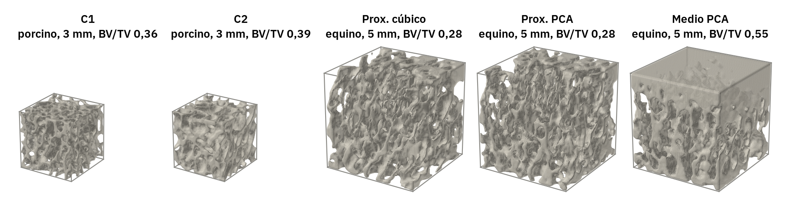
Los VOIs no son homogéneos en altura, y eso importa al leer los resultados. En los porcinos, el BV/TV de cada capa horizontal oscila entre 0,29 y 0,47 sin una tendencia común. En los dos equinos proximales baja de 0,5 en la base a 0,16 o 0,17 hacia el 80 % de la altura y vuelve a 0,32 en el techo; sus perfiles son casi idénticos, lo que es coherente con que se trate de la misma región con dos alineaciones distintas. El equino medio termina en una capa compacta: sus 10 capas superiores (0,51 mm) tienen un BV/TV de 0,98 o más, y la transición desde el hueso trabecular (0,32 a mitad de altura) ocupa casi un tercio del VOI (Figura 5). Su cubo de ensayo, que deja fuera 0,83 mm por cada lado, tiene un BV/TV de 0,45, frente a 0,55 del VOI completo.
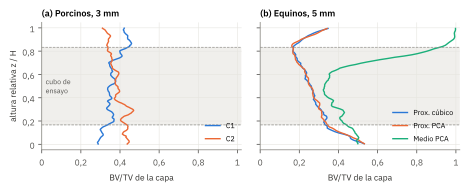
Cada VOI se remuestrea a 96³ (h = 31 µm en los porcinos y 52 µm en los equinos). Bloque de 1,1 a 1,8 millones de grados de libertad (GDL) con plato y con tracción; cubo central de 64³ (2,0 y 3,3 mm de lado, 0,31 a 0,48 millones de GDL) ensayado con la app. Diez bloques en total, de 2,5 a 6 min cada uno. Para los campos, el bloque con plato y el cubo con tracción y con plato se repitieron guardando la tensión de cada vóxel (ecuación 11).
Cada VOI completo por fem.analizar, el camino de la interfaz, con los análisis «lineal» y «lineal con plato», NGSolve y procesos aislados. Ladrillos y malla suave a 40³: la resolución de ladrillos por omisión. La malla suave a 48³ (su valor por omisión) no cupo en memoria (ficha R5).
La Figura 6 muestra la tensión vertical en un corte del cubo de ensayo del VOI proximal cúbico, el más afectado, en los tres ensayos de la Figura 1. Los tres mapas se parecen porque contienen las mismas trabéculas; las diferencias con la referencia (fila inferior) señalan dónde reparte mal la carga cada ensayo. Con tracción, las diferencias se concentran en la mitad superior: hay trabéculas que llegan al techo y cargan más que dentro del bloque, y otras que cargan menos porque, en el bloque, la carga les llegaba por hueso que el corte eliminó. Con el plato, la mitad superior se acerca a la referencia, pero persisten las diferencias en las trabéculas junto a las caras laterales.
Los perfiles de la ecuación (11) resumen ese comportamiento en los cinco VOIs (Figura 7). Como cada perfil se divide por el de la referencia, la arquitectura se cancela y queda solo el efecto de los bordes. Tres resultados se repiten:
El déficit lateral no se debe a que el cubo aislado pierda hueso: más del 99,7 % de los vóxeles óseos del cubo formaron parte del modelo resistente en los quince ensayos. Las trabéculas cortadas siguen unidas al resto, pero sin el hueso vecino que les transmitía carga.
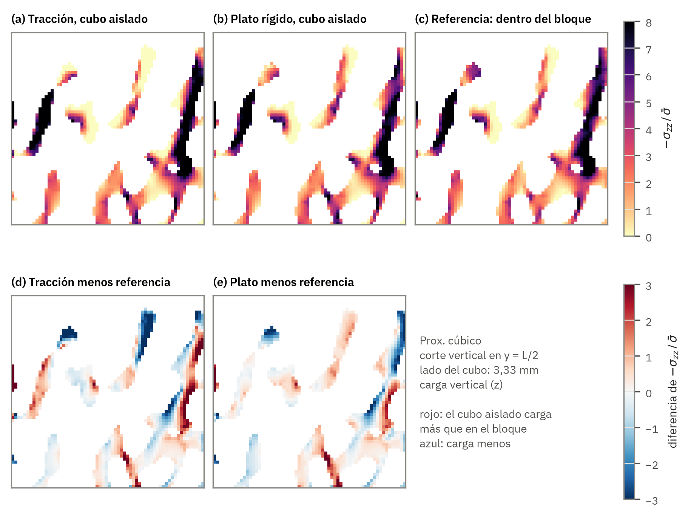
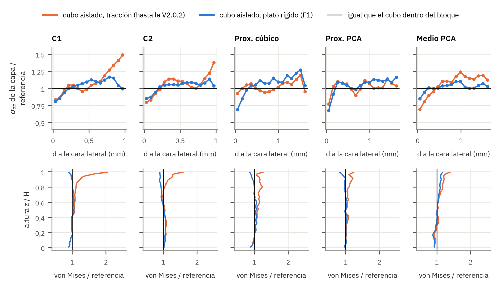
Un valor por debajo de 1 en una capa significa que el cubo aislado le hace soportar a esa capa menos tensión que la que soportaría rodeada de hueso; por encima de 1, más. Como la tensión media del cubo está fijada, un déficit cerca de las caras se compensa con un exceso en el interior. Los perfiles laterales son más ruidosos en los porcinos porque sus capas, de 63 µm, contienen pocas trabéculas.
La Figura 8 resume el resultado principal. En los cinco VOIs, el E que publicaba la aplicación queda muy por debajo del hueso embebido, con errores de −25 a −26 % en los porcinos, −29 y −35 % en los equinos proximales y −11 % en el equino medio, el más denso. Todas las correcciones acercan el valor a la referencia; el plato rígido lo hace en todos los VOIs y la combinación con el núcleo, en los tres en que el núcleo cabe. En las Figuras 8 y 9, cada fila es un VOI y cada punto, un método; un punto en 0 reproduce el hueso embebido, y los puntos naranjas son lo que la aplicación publicaba antes de las correcciones.
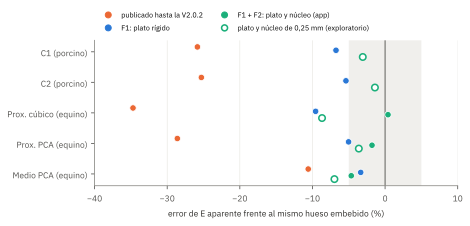
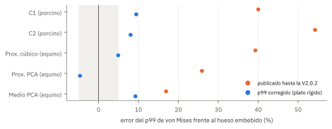
La comprobación de que las correcciones aceptadas en el espinodoide, el plato rígido (F1) y el núcleo (F2), reducen el error también en hueso trabecular de micro-CT, con arquitecturas más irregulares, anisotropía real y densidades de 0,26 a 0,45 en el cubo de ensayo.
El error del E publicado hasta la V2.0.2 fue de −25,8 y −25,3 % (porcinos), −34,7 y −28,6 % (equinos proximales) y −10,6 % (equino medio). Con plato rígido bajó a −6,8; −5,4; −9,6; −5,0 y −3,4 %. Con plato y núcleo, en los equinos, a +0,4; −1,8 y −4,7 %. El núcleo solo con tracción dio −5,0; −10,4 y −3,1 %.
El artefacto es mayor cuanto menos denso es el hueso: el VOI medio (BV/TV del cubo 0,45) perdió un 11 % de rigidez, y los proximales (0,26), un 29 a 35 %. Es la tendencia descrita en especímenes reales para el artefacto lateral, que crece al disminuir la fracción de volumen y aumentar la separación trabecular4.
Con el p99, el valor publicado sobrestimaba la referencia entre un 17 y un 54 %. Con plato, el error quedó entre −4,7 y +9,4 %. Los campos explican el cambio (Figuras 6 y 7): con tracción, el hueso del techo soportaba hasta 1,8 veces el von Mises de la referencia, y el plato elimina esa concentración.
En el VOI medio, el núcleo con plato (−4,7 %) no superó al plato solo (−3,4 %), y el núcleo exploratorio de 0,25 mm empeoró los VOIs equinos (−3,6 a −8,7 %). El margen de 0,625 mm sigue siendo el adecuado para VOIs de 5 mm. En hueso denso, la ganancia del núcleo es pequeña porque el artefacto de partida también lo es. El plato, por su parte, no corrige el déficit de carga junto a las caras laterales (del 68 al 85 % de la referencia en la capa exterior); por eso el núcleo sigue siendo necesario donde cabe.
Qué es. El núcleo necesita un VOI de al menos 2,25 mm de lado, según el límite de la ecuación (5). En los VOIs porcinos, el cubo de ensayo mide 2,0 mm y el núcleo no existe. La V2.1.0 tenía previsto que, sin núcleo con plato, se usara el núcleo con tracción, pero no qué hacer si tampoco ese existía. El registro corregido se quedaba entonces sin E, aunque el plato sobre el VOI completo estaba calculado.
Cómo se corrigió. La V2.1.1 añade un tercer escalón: si no cabe ningún núcleo, el E corregido es el del plato sobre el VOI completo (plato_voi), la corrección F1 ya aceptada en el espinodoide. En los dos VOIs porcinos, ese valor tiene un error de −6,8 y −5,4 %, frente a −25,8 y −25,3 % sin corregir. El informe de publicación declara el método usado.
Qué es. fem.analizar, el camino que usan la interfaz y la línea de órdenes, filtraba los análisis pidiendo al motor capacidades no lineales para todo lo que no se llamara exactamente «lineal». Con el motor propio de la aplicación, que no resuelve el plato ni el no lineal, el nuevo «lineal con plato» se descartaba y se anotaba como fallo. El registro quedaba con ok = False, aunque el lineal y el E corregido con el núcleo se habían calculado bien. En la interfaz, el ensayo aparecía con fallos.
Por qué no se vio antes. Las pruebas de la V2.1.0 llamaban a fem.ensayo directamente, que sí trata bien el caso. El fallo estaba en la capa de encima.
Cómo se corrigió. El filtro trata «lineal con plato» como lineal, y fem.ensayo lo declara no disponible sin contarlo como fallo. El bloque 30 de la suite tiene dos pruebas nuevas: una pasa por fem.analizar con el motor de la app y con NGSolve, y falla con la V2.1.0 (comprobado); la otra cubre el escalón plato_voi de R2.
La aplicación remuestrea el VOI a 40³ para la malla de ladrillos y a 48³ para la malla suave, por omisión. Con trabéculas de 0,12 a 0,35 mm, eso deja de 1,3 a 2,8 vóxeles por espesor trabecular (Figura 10). En modelos de alta resolución de hueso trabecular, las propiedades aparentes se mantuvieron a menos del 10 % de las de la malla más fina cuando el espesor medio superaba cuatro elementos3.
La validación embebida se hizo a 96³, con 3,1 a 6,7 elementos por espesor. Los errores de las correcciones medidos aquí valen para esa resolución. A 40³, el error de discretización se suma al de los bordes; las correcciones atacan el segundo, no el primero.
La malla suave a 48³ de estos VOIs necesitaría, según la estimación de la propia aplicación (fem.tamano_previsto), entre 7,8 y 10 GB con el resolvedor directo. En un equipo de 15 GB, el primer intento (C1, con BDDC) agotó la memoria y el proceso terminó con el código 137. Por eso el uso práctico usó la malla suave a 40³.
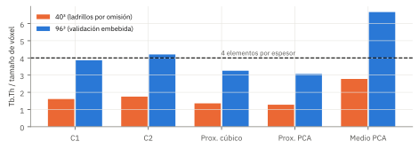
Elegir la resolución por Tb.Th, no por un número fijo de vóxeles. La aplicación ya mide Tb.Th; podría proponer la n que da Tb.Th/h ≥ 4, sin superar la resolución nativa de la imagen, y avisar cuando no se alcance.
Comprobar la memoria antes de lanzar la malla suave. tamano_previsto ya estima la memoria; la interfaz puede bloquear o avisar si supera la del equipo.
Cada VOI completo se ensayó por fem.analizar, el camino de la interfaz, con NGSolve, «lineal» y «lineal con plato», y ladrillos y malla suave a 40³. Aquí no hay referencia: se ve cuánto cambian los números publicados.
Con ladrillos, el E corregido fue mayor que el publicado en cuatro VOIs: +8 y +10 % en los porcinos y +67 y +57 % en los equinos proximales. En el equino medio fue un 12 % menor (4114 frente a 4660 MPa). En ese VOI, el plato sobre el VOI completo sí aumentó el E (+6 %), pero el núcleo, un cubo de 3,75 mm en el centro, deja fuera la capa compacta del techo (0,51 mm de hueso macizo, Figura 5): en la imagen nativa, su BV/TV es de 0,47, frente a 0,55 del VOI completo, y es menos rígido que el conjunto. El valor corregido de un VOI heterogéneo describe su núcleo, no el VOI completo, y eso debe declararse al citarlo; en este caso describe el hueso trabecular sin la capa compacta.
El p99 corregido fue entre un 2 y un 24 % menor que el publicado con ladrillos, y entre un 12 y un 39 % menor con la malla suave. Es el sentido que predijo la validación (Figura 9).
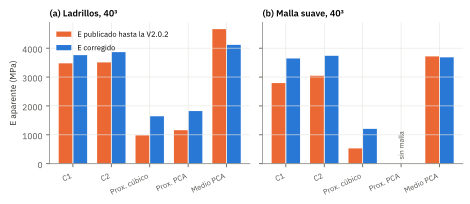
Hasta la V2.0.2, la malla suave daba un E entre un 13 y un 46 % menor que la de ladrillos. Con las correcciones, la diferencia bajó al −3 % en los porcinos y al −10 % en el equino medio, pero siguió en −27 % en el equino proximal cúbico. Ese VOI tiene trabéculas de 1,4 vóxeles de espesor a 40³, que el suavizado adelgaza (ficha R4); la corrección de borde no compensa una resolución insuficiente.
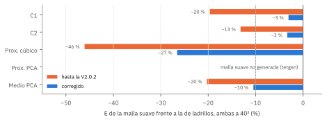
En la Figura 11, cada par de barras es un VOI: la naranja es lo que la aplicación publicaba y la azul, el E corregido con la V2.1.1. En la Figura 12, una barra en 0 significa que las dos mallas dan la misma rigidez; la diferencia que queda tras las correcciones se debe sobre todo a la resolución, no a los bordes.
Dos de las cinco mallas suaves a 40³ no llegaron a resolverse porque el mallado se detuvo. Son fallos del mallador de la aplicación, previos a las correcciones de borde y ajenos a ellas.
Tras el suavizado, la aplicación devuelve a su plano exacto los nodos que quedan a menos de 10⁻³ vóxeles de una cara del cubo. Las «astillas planas», tetraedros con sus cuatro esquinas en una cara, quedan con volumen cero y ya se eliminaban. En el VOI medio apareció otro caso: un tetraedro con tres esquinas en la base y la cuarta a 0,001 vóxeles, de volumen 1,7·10⁻¹⁰ veces la mediana, que al ajustar los nodos se invirtió en lugar de aplanarse. La aplicación rechazaba entonces toda la malla. La V2.1.1 quita estas astillas invertidas si son degeneradas (menos de 10⁻⁶ veces la mediana) y lo declara en el informe de malla. Un tetraedro invertido de tamaño normal sigue rechazando la malla. Con el arreglo, la malla del VOI medio se generó quitando una astilla invertida y 65 planas, con una pérdida de volumen del 0,04 %.
tetgen no pudo tetraedralizar la superficie: «Failed to tetrahedralize. You may need to repair surface by making it manifold». La superficie suavizada y reparada contiene una zona que no es una variedad, y no se ha investigado su origen. La aplicación lo comunica como un fallo del ensayo, sin resultado erróneo.
Astillas invertidas degeneradas. Hecho en fem.preparar_tet10, con prueba en el bloque 30.
Superficie no reparable. Localizar la arista o el vértice que no es variedad tras el aplanado de las tapas y repararlo antes de tetgen, o reintentar con otro decimado o suavizado.
La rigidez de la referencia apenas depende de cómo se cargue el bloque, pero el p99 sí en dos VOIs: en los equinos proximales, cambiar el plato por tracción en el bloque elevó el p99 de la región de referencia un 21,6 y un 28,3 %, frente a un 1,4 a 3,6 % en los demás. El margen embebido (0,83 mm) no aísla del todo la tensión local de la región en estos VOIs, los más porosos (Tb.Sp de 0,407 y 0,435 mm), aunque sí su rigidez. Por eso los errores de p99 de estos dos VOIs (+4,9 y −4,7 % con plato) tienen una incertidumbre del orden de su propio valor, y el p99 corregido debe citarse con reserva en hueso muy poroso.
Con plato, la tensión de fallo del criterio de Pistoia (ecuación 7) fue mayor que con tracción en los cinco cubos de ensayo: +17,9 y +23,6 % en los porcinos, +17,6 y +22,6 % en los equinos proximales y +7,2 % en el medio. Es coherente con que el techo, menos deformado con el plato, deje de concentrar la deformación que dispara el criterio. Sin embargo, la referencia embebida no se usó para la carga de fallo y el criterio se calibró con ensayos en los que la carga se aplicaba de otra forma2, de modo que este cambio no está validado. La aplicación muestra la carga de fallo con plato solo como dato del análisis, no como valor corregido.
| # | Acción | Corrige | Dónde | Esfuerzo |
|---|---|---|---|---|
| 1 | Publicar la V2.1.1 con los arreglos de R2, R3 y la astilla invertida de R8 | R2, R3, R8 | fem._corregido, fem.analizar, fem.preparar_tet10 | Hecho |
| 2 | Resolución propuesta según Tb.Th/h ≥ 4 | R4 | visor.py, fem.analizar | Bajo |
| 3 | Aviso o bloqueo por memoria antes de la malla suave | R5 | fem.tamano_previsto, diálogo FEM | Bajo |
| 4 | Reparar la superficie no variedad antes de tetgen | R8 | solido.malla_tet10 | Medio |
| 4b | Validar la carga de fallo con plato frente a la referencia embebida | R7 | vois_reales/estudio.py | Bajo |
| 5 | Referencia embebida con más margen para el p99 en hueso poroso (VOIs mayores) | R6 | protocolo de imagen | Medio |
| 6 | Repetir en más VOIs y localizaciones (vértebra, fémur) | generalidad | datos | Medio |
Los VOIs no viajan con el repositorio; su huella SHA-256 queda en resultados/validacion.json. Desde comparativa_motores/vois_reales/, con los cinco archivos en una carpeta:
python estudio.py CARPETA morfometria validacion (unos 45 min; bloques de hasta 1,8 millones de GDL)
python estudio.py CARPETA practico (procesos aislados; malla suave a 40³)
python estudio.py CARPETA campos (unos 25 min; cortes y perfiles de tensión)
python resumen_campos.py
python figuras_vois.py CARPETA
python figuras_3d.py CARPETA (superficies por marching cubes, sin OpenGL)
python -m pytest tests/test_30_correcciones.py
Referencias verificadas en PubMed. Documentos internos: comparativa_motores/correcciones/INFORME_CORRECCIONES.pdf (validación en el espinodoide) y comparativa_motores/INFORME_ARTEFACTOS.pdf (diagnóstico).
Diseño del trabajo. Estudio computacional de verificación y aplicación de un modelo de elementos finitos sobre cinco especímenes de micro-CT, con referencia numérica embebida; sin sujetos ni datos clínicos, de modo que PRISMA, CONSORT y STROBE no son aplicables. Se usa la guía de Erdemir et al. (2012) para estudios de elementos finitos en biomecánica5; no consta una versión posterior que la sustituya.
| Ítem | Contenido | Estado | Modificación necesaria |
|---|---|---|---|
| Identificación del modelo | |||
| 1 | Propósito y magnitudes de interés | Cumple | Portada y sección 1. |
| 2 | Versión del software | Cumple | Portada. |
| Estructura del modelo | |||
| 3 | Geometría: origen de las imágenes, segmentación | Parcial | VOIs ya segmentados por el usuario, con su geometría en 3D y su perfil de densidad (Figuras 4 y 5); faltan escáner, voltaje, umbral y localización anatómica exacta. |
| 4 | Malla: tipo, tamaño, número de elementos | Cumple | Secciones 3 y 5. |
| 5 | Propiedades del material | Parcial | Es = 20 GPa, ν = 0,3 (protocolo de la app), homogéneo; falta justificarlo para cada especie. |
| 6 | Condiciones de contorno y cargas | Cumple | Sección 2, ecuaciones (1) y (2). |
| 7 | Contacto | No aplica | Sin contacto. |
| Estructura de la simulación | |||
| 8 | Resolvedor y tolerancias | Cumple | Secciones 3 y 5. |
| 9 | Postproceso | Cumple | Sección 2, ecuaciones (3) a (11). |
| Verificación | |||
| 10 | Verificación del código | Cumple | Bloque 30 (11 pruebas) e informes anteriores. |
| 11 | Convergencia de malla | No cumple | No se estudió la convergencia en estos VOIs; la ficha R4 muestra que 40³ queda por debajo del criterio. Para publicar, repetir a varias resoluciones. |
| 12 | Sensibilidad | Cumple | Carga del bloque de referencia (R6). |
| Validación | |||
| 13 | Comparación con datos experimentales | No cumple | Referencia numérica; declarado en Limitaciones. |
| Disponibilidad | |||
| 14 | Modelo, datos y código | Parcial | Código y resultados en el repositorio; los VOIs no se publican (huella SHA-256 registrada). |